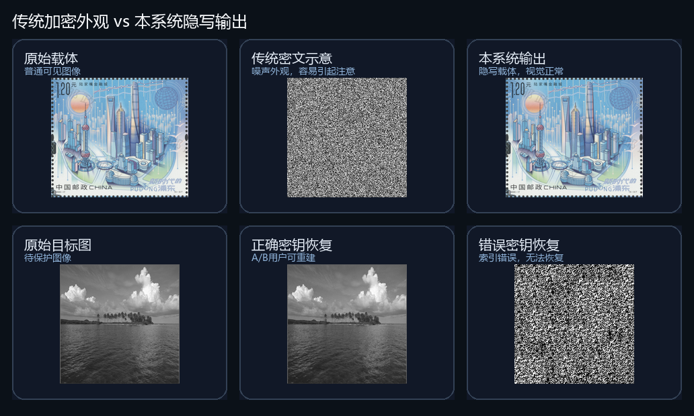

系统效果总览
首屏直接展示传统密文、本系统隐写输出、正确恢复和错误密钥恢复的差异。

网页端成果展示
一个面向图像隐私传输场景的可视化工具入口：将压缩感知、隐写载体、AMP-Net 重建和分级访问结果集中展示， 让用户不用阅读代码，也能快速理解系统输出、权限差异和实验质量。
工具能力
这个页面不是论文摘要，而是项目的可视化入口。它把系统最关键的输出、权限规则和实验指标放在同一个界面里， 方便老师、用户或团队成员快速检查项目完成度。
首屏直接展示传统密文、本系统隐写输出、正确恢复和错误密钥恢复的差异。
用角色切换模拟访客、A 用户、B 用户能看到的不同内容。
集中呈现 PSNR、SSIM、错误密钥敏感性和端到端耗时。
网页、代码仓库、桌面 demo 和实验图表形成一个完整展示包。
使用流程
确认隐写后图像仍保持自然视觉外观。
比较访客、A 用户、B 用户的可见内容。
查看目标图和源图的 AMP-Net 重建质量。
用 PSNR、SSIM 和耗时判断系统效果。
权限控制
角色切换是网页端最直观的交互。它把算法里的权限规则转成用户能理解的界面： 没有权限只看载体，部分授权恢复目标图，完整授权恢复源图和目标图。
访客模式
适合公开传输或展示场景。普通观察者看不到明显密文，也无法恢复隐藏图像。
实验看板
网页端保留核心实验数据，帮助用户快速判断：恢复质量是否足够清晰、载体是否足够自然、错误密钥是否无法恢复。
目标图重建
36.22 dB SSIM 0.9591源图重建
34.62 dB SSIM 0.9459隐写载体
51.15 dB SSIM 0.9985错误密钥
5.61 dB SSIM 0.0027端到端耗时
6.92s 加密 4.30s成果组成
用于在线查看项目效果、权限差异和实验指标，是最方便的成果展示入口。
本地桌面程序负责图像选择、加密隐写、AMP 重建和权限结果生成。
核心代码包含压缩测量、矩阵加密、索引置乱、DCT 隐写和重建流程。
项目入口
公开仓库保留核心代码、实验脚本、网页端和展示图。模型权重、完整输出和结项书留在本地， 让公开页面更轻量，也更适合老师快速浏览。